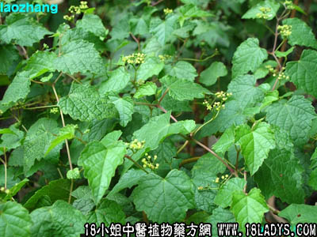

山菩提(中药材植物名:蛇葡萄)(植物科目:葡萄科)

别名：野菩提。
植物名：蛇葡萄。
生长环境：本品为草质藤本。生于旷野或灌木丛中，凡是稍微湿润环境生长较好。
分布：我国从南到北均有，广东各地亦有分布。此外日本，朝鲜亦有。
入药部分：根。
采集期：全年。
自采地点：山岗。
性味：性平、味微甘。
功能：祛湿消肿。
主治、用量和用法：治脚肿，配伍用。
验方：（治脚肿方）干生菩提根5钱、生崩大碗7钱、生苡米1两、水鱼一只（去脏，不分公母，约8两重），用清水六碗，煎成一碗服。
（方解）此方为民间古方，原本所用山菩提不是本种，其形态似天香炉而扳援生长者。以本品代用，效果亦佳。其性能专于祛湿、消肿，以配伍为多。本方配伍崩大腕，苡米清热利尿，水鱼滋阴，合为攻补兼施，补阴利尿之剂。
（方歌）祛风消肿山菩提，崩大腕藏生苡仁，水鱼一头潜汤下，消肿功能效如神。